Let  be a field and
be a field and
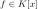
non-constant. Then there is an extension with
with 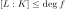
in which has a root.
has a root.
Let  be an irreducible factor of , which exists because
be an irreducible factor of , which exists because
![\(K[x]\)](m/af650f35ded7a794d389ff310327aaedc266a5d4.svg) is a unique factorisation domain. The ideal
is a unique factorisation domain. The ideal
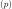
is maximal, so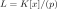
is a field; the composite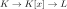
is a ring homomorphism between fields, hence injective, so is an
extension of . The class
is an
extension of . The class  of
of  satisfies
satisfies
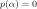
, hence , and
, and
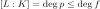
by the description of a simple algebraic extension.
Let be non-constant. An extension is a
splitting field of over if factors into linear
factors in
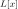
and is generated over by the roots of
.
Every non-constant has a splitting field , with
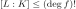
.Induct on
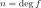
. For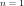
, itself works. Otherwise
Kronecker's theorem gives 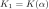
with
and 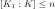
; in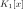
we may write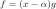
with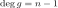
, by the factor theorem. By induction has a splitting field over
has a splitting field over 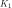
with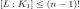
. Then splits in , and is
generated over by and the roots of , which are the
roots of . The tower law gives 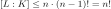
.Let
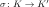
be a field isomorphism, extended to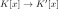
coefficientwise, let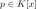
be irreducible and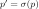
. If is a root of in some extension
of and 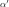
a root of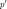
in some extension of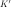
, then extends to an isomorphism
sending to .
extends to an isomorphism
sending to .
The coefficientwise map is a ring isomorphism carrying onto
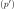
, so it induces an isomorphism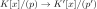
of the quotients. By the description of a simple algebraic extension,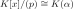
by sending the class of to , and likewise on the other side. Composing
the three isomorphisms gives the claim; it restricts to on
and sends to .
Let be an isomorphism, non-constant and
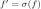
. Any splitting field of
over and any splitting field 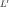
of over are
isomorphic by an isomorphism extending . In particular the
splitting field of over is unique up to a -isomorphism.
over are
isomorphic by an isomorphism extending . In particular the
splitting field of over is unique up to a -isomorphism.
Induct on
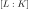
. If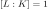
then already splits in
, so splits in and 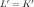
; itself
serves.
Otherwise some irreducible factor of in has degree
at least  . Let
. Let
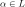
be a root of and
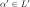
a root of , which exists because divides and splits in . By the lemma
extends to 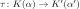
. Now is a splitting field of over and one of
over 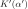
, while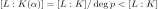
by the tower law. The induction hypothesis extends to an isomorphism
to an isomorphism
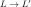
.The same induction, run with
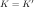
and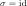
, counts the-automorphisms of : at each step the extension can send
to any root of its minimal polynomial, so the number of
automorphisms is exactly when every such polynomial has
distinct roots. That condition is separability, and the count is the
first half of the Galois correspondence.
Iterating the construction over all polynomials at once produces an algebraically closed extension – an algebraic closure – but the iteration is transfinite and needs Zorn's lemma, since there is no bound on the degrees involved.